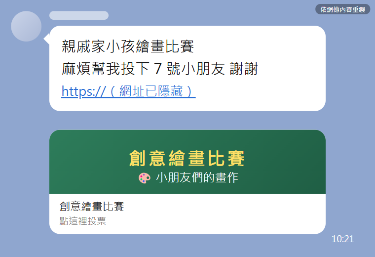
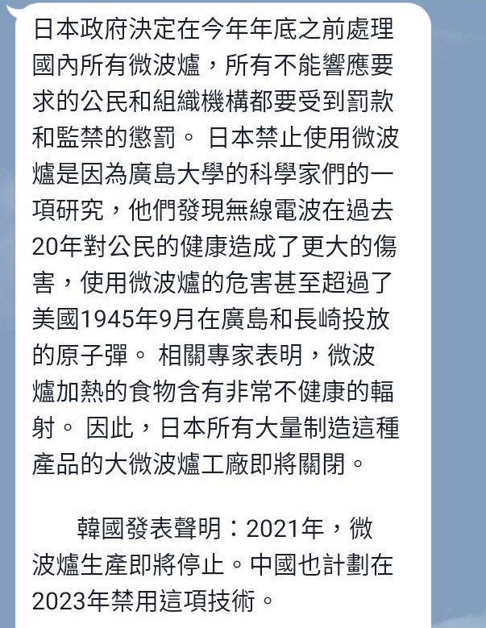
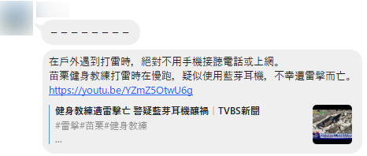
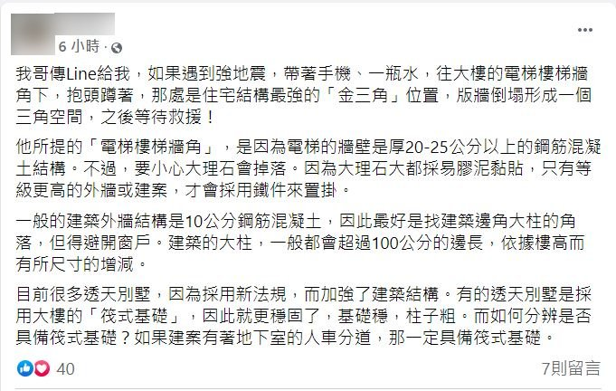

訊息查證小偵探
五年級上學期 · L05 查證報告（週五版）· 全部寫在學習單，可分節完成
已連線
先寫好你是誰
在最上面填年級、班級、座號。例：五年 3 班 12 號 → 5、3、12
上一節存過？
今天的任務
查一則網路訊息，寫成 7 欄的查證報告。
每寫好一欄，就收集一顆 ★。
寫不完？按黃色的「先存檔交一次」，下次拿回來接著寫。
選一則你要查的訊息
6 則都在網路上流傳過。選一則，按「選這則」。
C ‧ 幫忙投票給繪畫比賽的小朋友

依網傳訊息重製（網址已隱藏）・點圖可放大
D ‧ 微波爐加熱的食物有輻射

網傳訊息擷圖・點圖可放大
E ‧ 打雷戴藍芽耳機會被雷擊

網傳訊息擷圖・點圖可放大
訊息提到的新聞影片（中視新聞）
G ‧ 印度街頭小吃加了水溝水
網傳的影片（原始版本）
H ‧ 充電時講電話不能喝水
網傳的影片（原始版本）。這支影片可以用「以圖搜圖」查
K ‧ 地震要躲在「生命三角」

網傳貼文擷圖（發文者已遮蔽）・點圖可放大
找到查核文章
找到查核機構寫的那一篇。
你選的是：
看老師怎麼做
用關鍵字找到查核文章
換你找
- 圈 2～3 個關鍵詞，最後加「查核」
- 用 Google 搜尋，跳過最上面的 AI 摘要
- 點台灣事實查核中心或 MyGoPen 的文章
找到了？這個分頁不要關，下一步要用。
訊息是圖片或影片？點這裡，看怎麼用圖片找
用圖片找：以圖搜圖、智慧鏡頭
影片：先按 Win＋Shift＋S 截一張圖再找
第 1 欄／共 7 欄
查核網址
把查核文章的網址貼過來。
看老師怎麼做
複製網址列，回來貼上
第 2 欄／共 7 欄
你使用的搜索工具
你是用什麼方法找到的？
看老師怎麼做
老師的示範
我輸入的是：陌生人 操作手機 生物特徵 查核
換你寫
- 選你剛剛用的工具（可以選兩個）
- 選了關鍵字搜尋：把搜尋框裡的字抄下來
① 我用的工具
第 3 欄／共 7 欄
原始內容描述
用自己的話說：這則訊息在講什麼。不寫真的假的。
看老師怎麼做
老師的示範
換你寫
你選的是：
- 說出訊息講了什麼事
- 說出訊息說會怎樣
- 說出在哪裡流傳（LINE、臉書…）
第 4 欄／共 7 欄
查核結果
查核機構給了什麼結果？
看老師怎麼做
看標題前的標籤，再看「你可以先知道」
老師的示範
換你寫
- 選哪一家查的
- 選標籤（照文章寫）
- 用一句話寫重點
① 哪一家查的
② 標籤
第 5 欄／共 7 欄
正確資訊
真正的事實是什麼？先寫 1 點就可以。
看老師怎麼做
老師的示範
2. 警方和 165 說，台灣查不到這種案件。
黃色＝是誰說的。用自己的話寫，不要整段貼上。
換你寫
- 找出最重要的一件事實
- 用自己的話寫成一句
- 寫出是誰說的（根據○○）
第 6 欄／共 7 欄
為什麼會流傳
這則訊息為什麼讓人想轉傳？
看老師怎麼做
老師的示範
黃色＝訊息裡的原句。
換你寫
- 選原因（可以選兩個）
- 寫出訊息裡哪一句話讓人想轉傳
① 原因
第 7 欄／共 7 欄
相信的後果
如果有人相信了，會怎樣？
看老師怎麼做
老師的示範
換你寫
- 選後果的種類
- 寫出誰會怎樣
① 後果的種類
預覽全部內容
從頭看一遍。要改的，按「去改」。
繳交
還沒寫完的，按「去寫」。
確定好了，按下面的按鈕交給老師。可以重交。
made by 資訊老師黃博胤